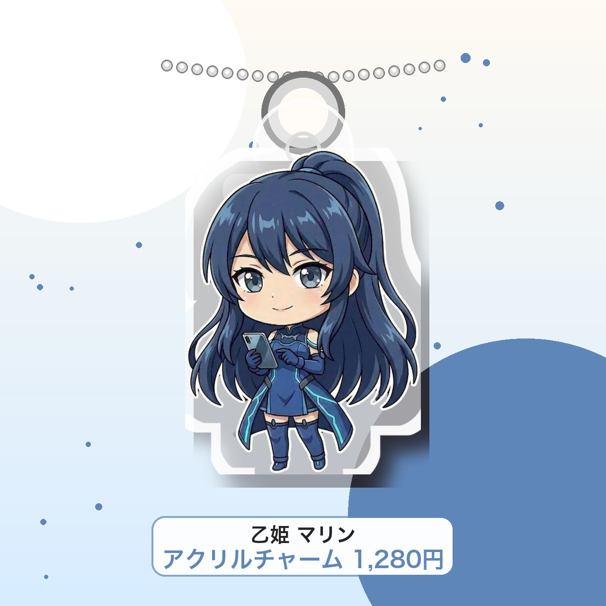
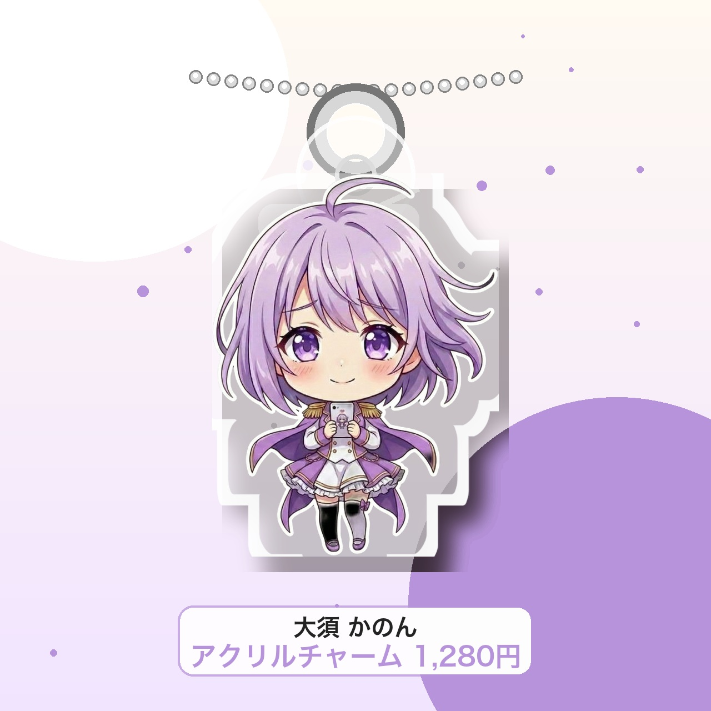
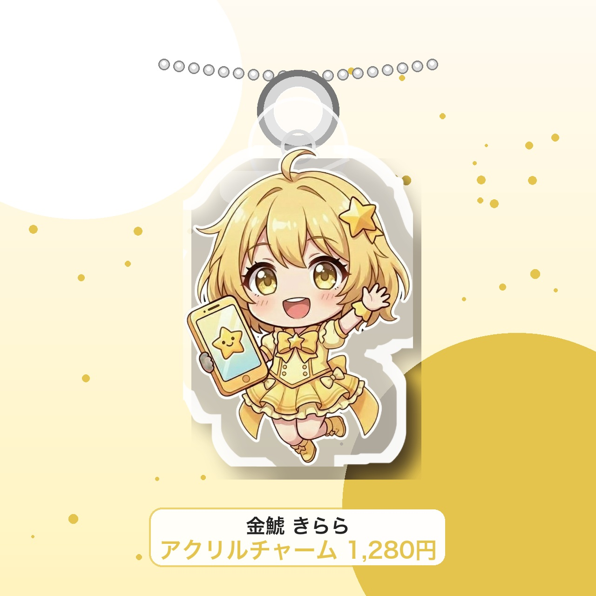
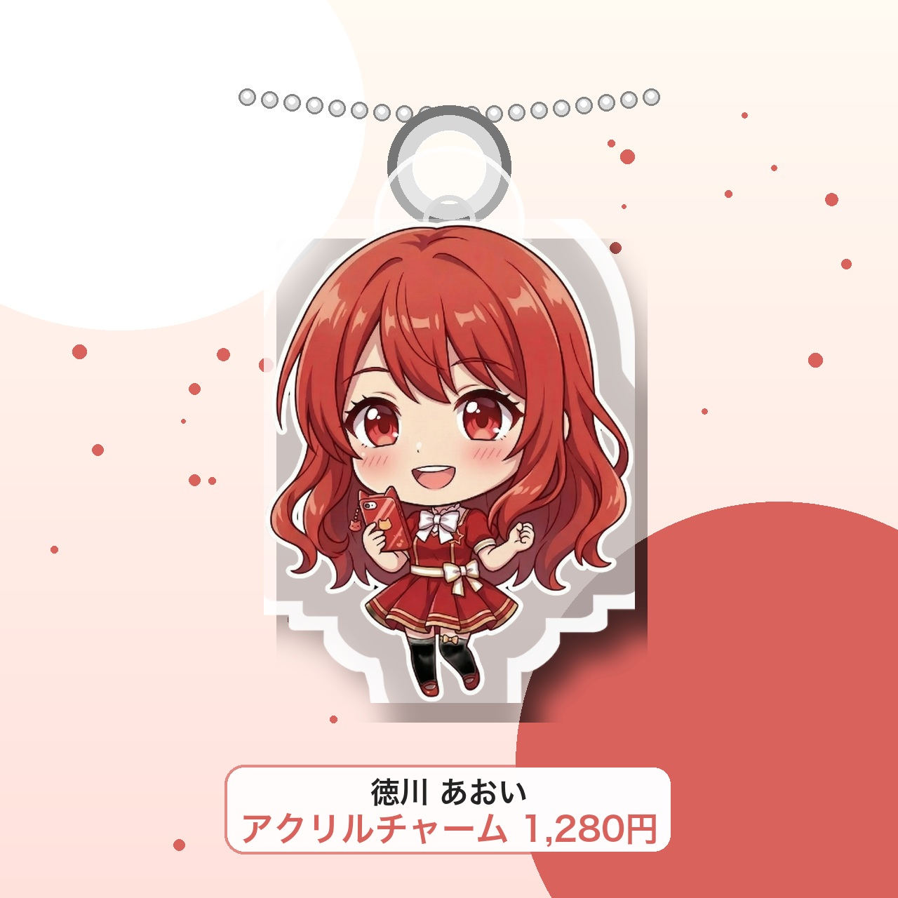
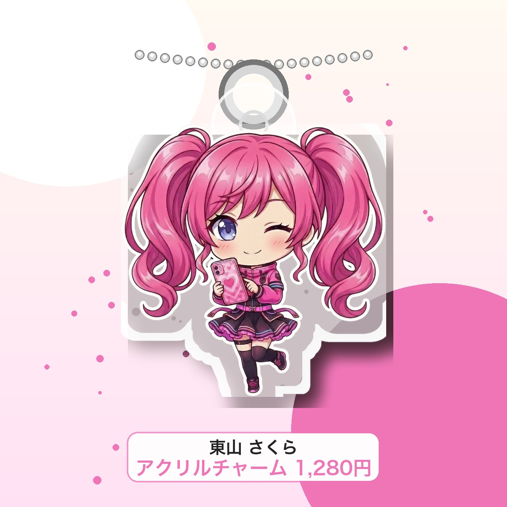
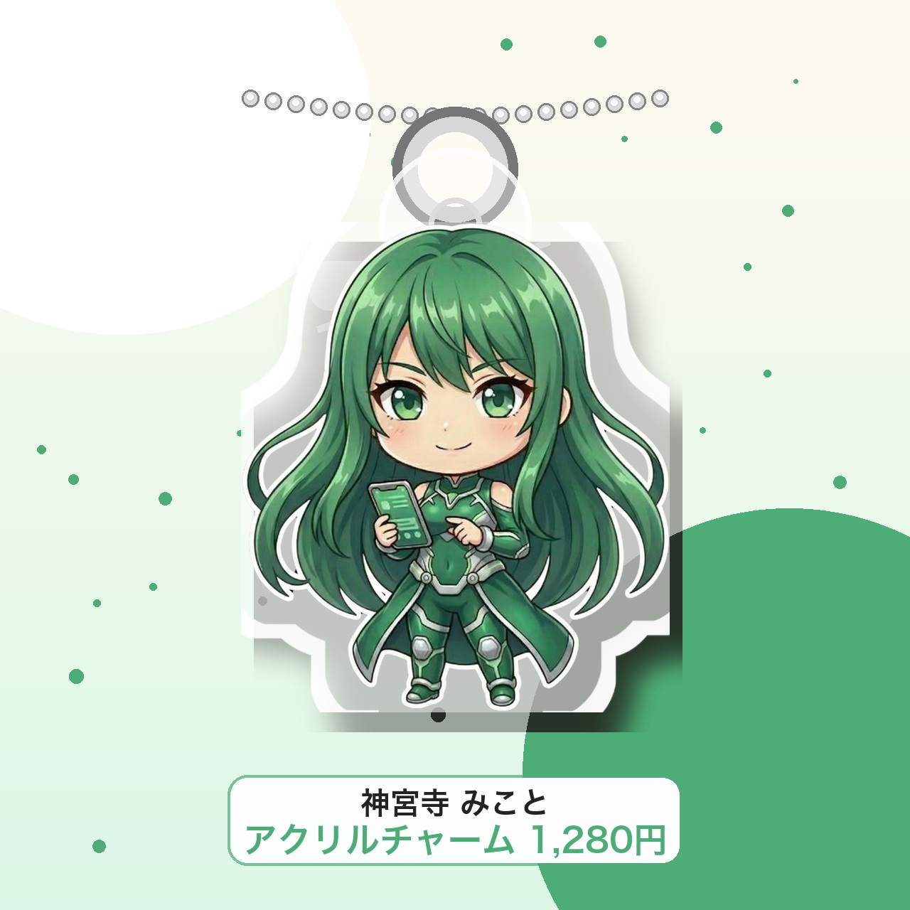

乙姫 マリン
スイーツと一緒に飾りたい、きらめく存在感。
1,980円（税込）
Kirameki Times Acrylic Goods
煌TIMESの6人が、机にも棚にもカフェ写真にも連れていきたくなるアクリルスタンドになりました。 ちびキャラはバッグやポーチにつけられるアクリルチャームで登場。推しを飾る、連れて歩く、どちらでも楽しめます。


For Fans
乙姫マリン、大須かのん、金鯱きらら、徳川あおい、東山さくら、神宮寺みこと。 6人それぞれの雰囲気に合わせた背景で、届いた後の飾り方まで想像できるページにしました。 部屋に置く、写真を撮る、イベントの日に連れていく。アクスタとチャームを、あなたの推し活に合わせて選べます。
Lineup
好きなキャラを1体から。気分や飾る場所に合わせて、背景の違いも楽しめます。
スイーツと一緒に飾りたい、きらめく存在感。
1,980円（税込）
デスクや本棚に置くと、毎日の作業時間が楽しくなる。
1,980円（税込）
明るい小物と相性抜群。写真に撮るだけで華やか。
1,980円（税込）
夜景やライトの前で、大人っぽい一枚が撮れる。
1,980円（税込）
花や自然光と並べると、やさしい雰囲気が広がる。
1,980円（税込）
ケーキやカフェ時間に添えたくなる、上品な一体。
1,980円（税込）Acrylic Charm
白フチのちびキャラに、キーホルダー用のボールチェーンを合わせたアクリルチャームです。バッグ、ポーチ、鍵まわりにも推しをそっと添えられます。

バッグに付けるだけで、落ち着いた青の存在感がきらり。
1,280円（税込）
やさしい紫のちびキャラを、いつものポーチに。
1,280円（税込）
明るい黄色が目を引く、元気を持ち歩けるチャーム。
1,280円（税込）
赤い推しカラーが映える、毎日使いしやすいサイズ感。
1,280円（税込）
ピンクのちびキャラで、ポーチや鍵まわりをかわいく。
1,280円（税込）
グリーンの上品な雰囲気を、身近なアイテムにプラス。
1,280円（税込）Favorite Point
白フチのレーザーカット風デザインで、キャラの輪郭が背景に負けずきれいに見えます。 アクスタは飾って写真映え、チャームはバッグやポーチにつけて一緒におでかけできます。
キャラの形に沿った白フチで、棚でも写真でも輪郭がくっきり。
アクスタは部屋に、チャームはバッグに。シーンに合わせて推しを楽しめます。
スイーツ、花、ライト、小物と一緒に撮るだけで推し活の一枚に。
Enjoy
机の上、コレクション棚、カフェ写真、夜のおでかけ気分。6人それぞれ違う世界観で楽しめます。
Shop
気になる子をまず1点。お気に入りが増えたら、アクスタで並べたり、チャームで持ち歩いたりできます。 販売開始後はここから各キャラクターの購入ページへ進めます。